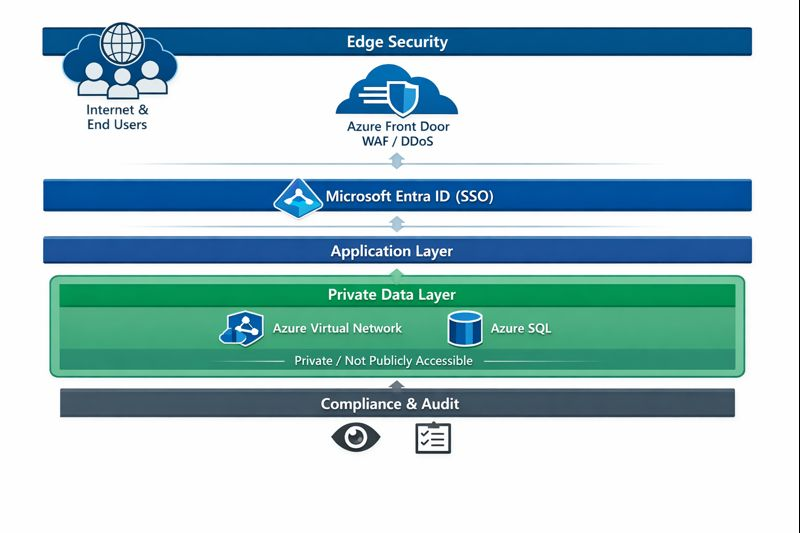

Speed Up SharePoint helps enterprise teams eliminate SharePoint performance bottlenecks through secure, scalable hybrid architectures. Lists, dashboards, and workflows run faster, reporting becomes reliable, and sensitive data remains protected through fine-grained access control.
Contact UsEnterprise teams typically see measurable performance gains within weeks. Schedule a technical review to identify architectural bottlenecks and next steps.
Schedule Technical Review
Led by principal architect Michael Harootoonyan, Speed Up SharePoint modernizes large-scale SharePoint environments. SharePoint stays as the collaboration layer, while heavy operations— search, reporting, and analytics—run on secure, high-performance SQL architectures.
The result: fast filtering, responsive dashboards, and fine-grained access control across enterprise datasets—scalable, compliant, and reliable without sacrificing usability.
Comprehensive analysis of SharePoint, SQL, search, and reporting architectures to identify performance bottlenecks, scaling risks, and security gaps.
Design of high-performance SharePoint–SQL architectures that retain SharePoint as the UI while offloading performance-critical operations to SQL.
50–100× faster filtering, search, and analytics on large datasets, ensuring operational workflows and dashboards remain responsive.
Reliable, SQL-backed reporting pipelines with governed access, delivering accurate and scalable dashboards.
Secure Azure-native designs using Managed Identity, Key Vault, secure coding practices, and perimeter protection to safeguard enterprise data.
Architecture-level guidance for enterprise teams on SharePoint best practices, hybrid design patterns, and performance tuning.
Our architecture layers highlight the key security and compliance zones for enterprise SharePoint deployments on Azure. This includes Edge & Access, Azure Front Door with WAF/DDoS protection, Internet/End Users, and private data governance.
Delivered hybrid SharePoint–SQL architectures supporting high-stakes M&A workflows, enterprise search, and secure document platforms, with fine-grained access control and high-performance dashboards.
Experience includes regulated environments, confidential deal data, and systems with strict audit and access requirements.
SharePoint can support very large lists, but performance constraints must be respected:
SharePoint remains the collaboration and UI layer while performance-critical operations are handled by SQL. Azure Functions, triggered by SharePoint webhooks, synchronize metadata directly into SQL for fast, reliable querying without throttling.
Assets that do not require granular access controls are stored in Azure Blob Storage for performance and scale, while SharePoint continues to serve as the secure UI for sensitive content.
Explore in-depth use cases for SharePoint optimization.
View Use CasesWe design systems that scale before touching implementation details — architecture first, not tool first.
This is not a generic Microsoft practice — performance at scale is our core focus.
Designed for compliance-heavy, high-stakes environments where mistakes are costly.
SQL offload without breaking SharePoint security, permissions, or workflows.
You work with the architect designing the system — not a rotating delivery team.
We prioritize measurable performance improvements and reliable outcomes for enterprise systems.
Call or email today for a technical consultation. Enterprise bottlenecks won’t fix themselves.